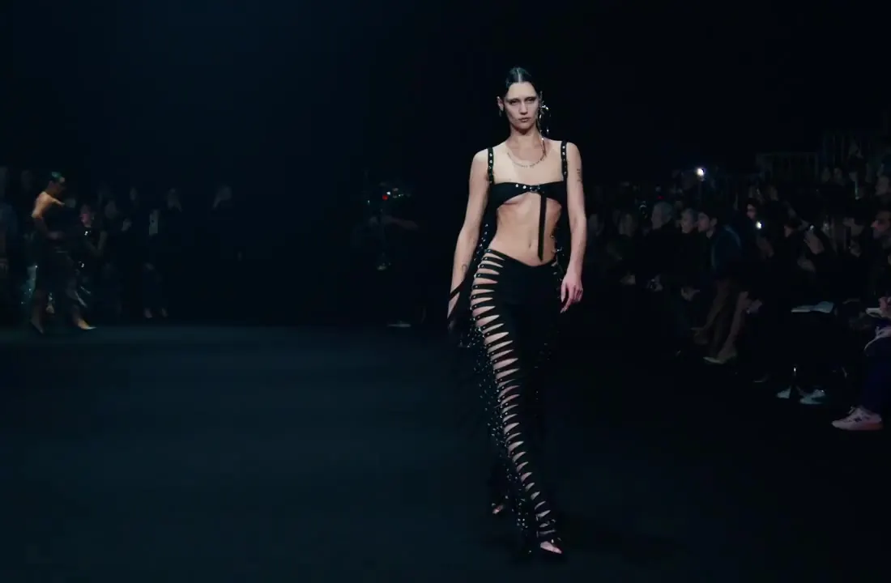
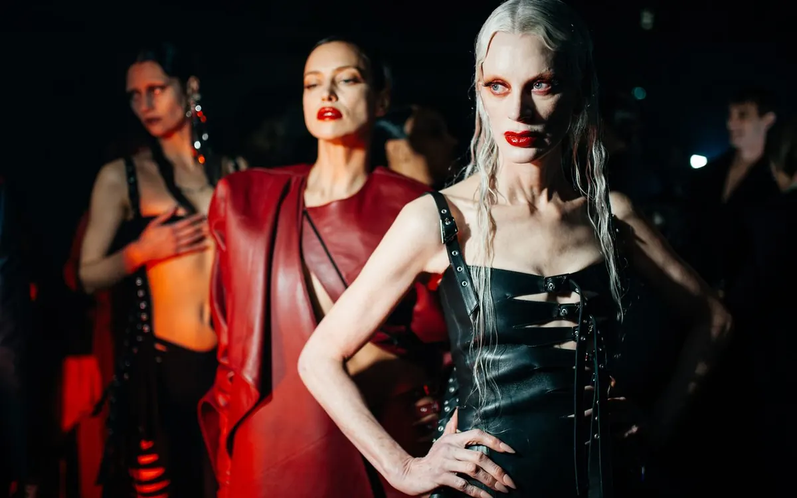

mugler
One sound across the Mugler F/W 2024 runway, campaign and post-production.
- Role
- Music Director
- Place
- Paris, France
- Dates
- F/W 2024
- Disciplines
- Music direction, Show soundtrack, Campaign sound, Remixes

The brief
For the Mugler Fall/Winter 2024 collection I set the sonic direction across the runway, the global campaign and post-production sound.
I worked with the creative director and the production team so every channel carried the same sound.
What I did
Runway soundtrack
Curated the show soundtrack for the Paris runway.
Exclusive show mix
Delivered the exclusive show mix of JT’s “Sideways.”
Campaign soundtrack
Curated the global campaign soundtrack.
Post-production sound
Directed the post-production sound design.
Results
- 1M+
- social impressions per reel, within 24 hours


Playerready
Sideways (Mugler F/W 2024 show mix)JT · Mugler F/W 2024
0:00 / 1:30